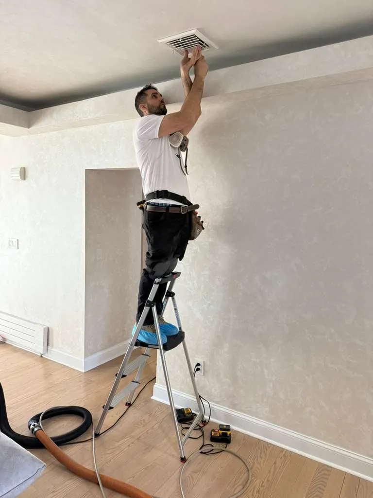
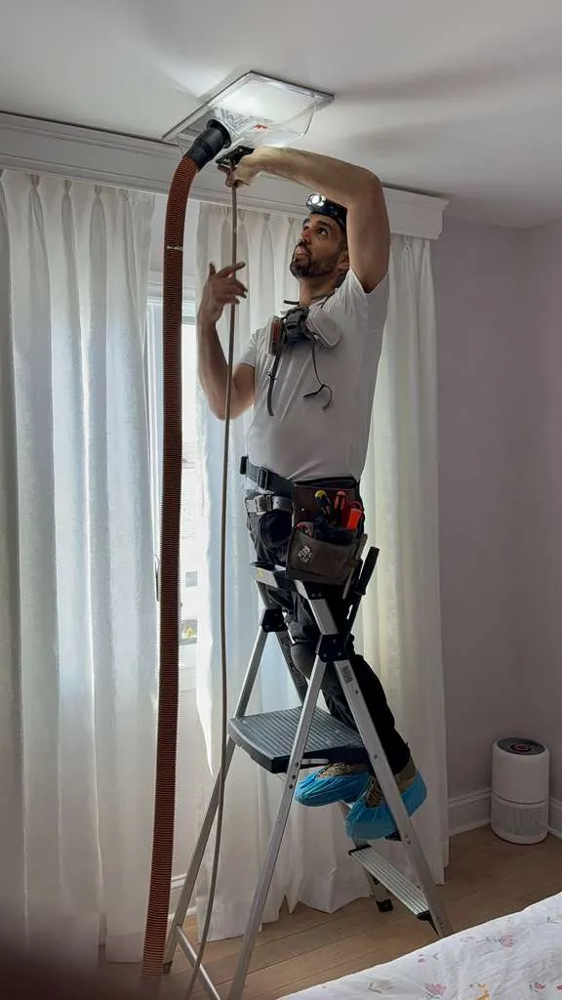
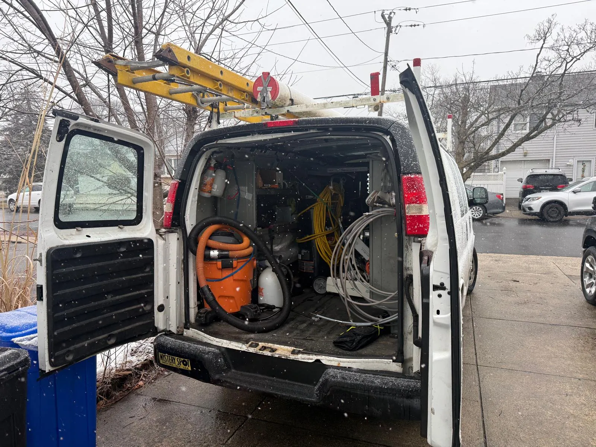
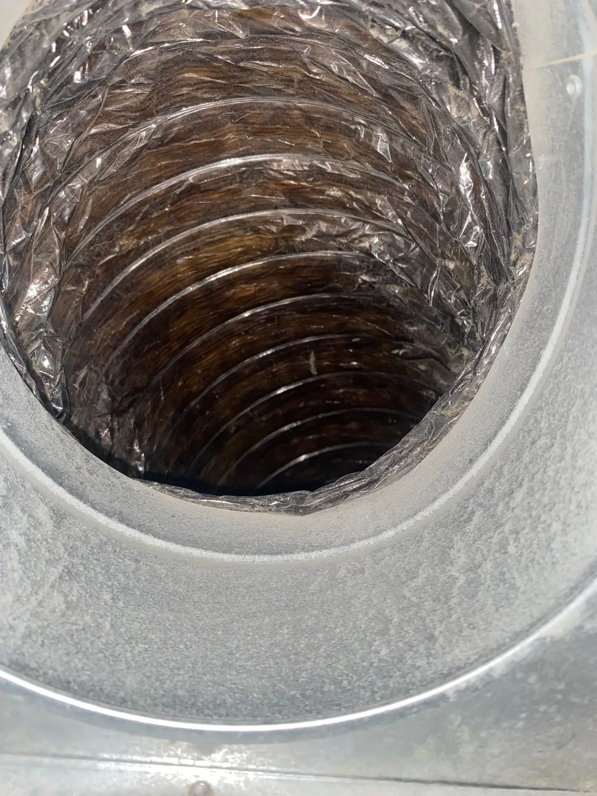
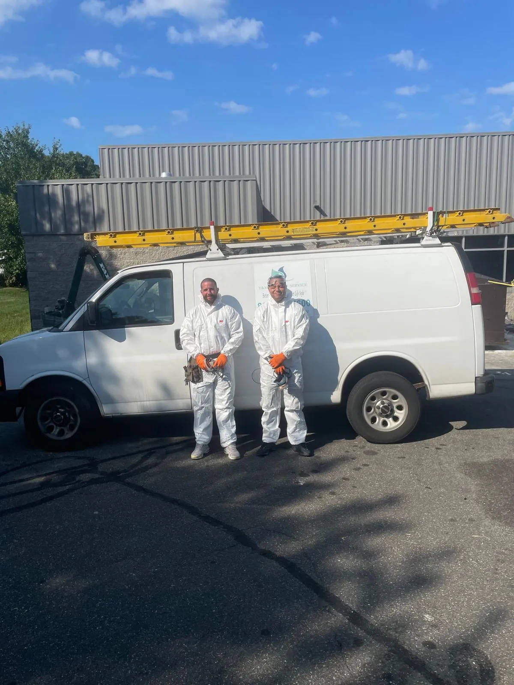
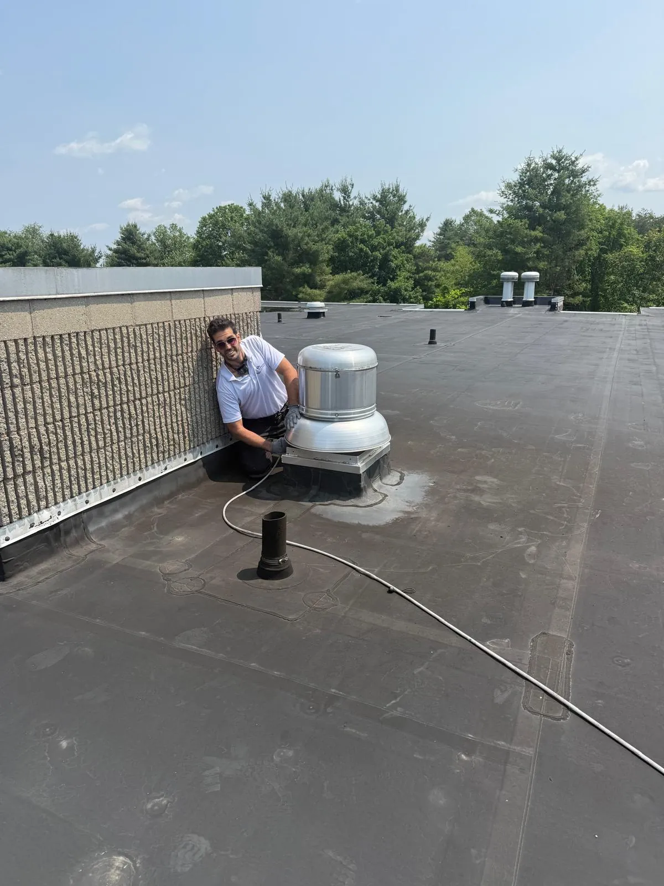

Duct Cleaning in Elmont, NY
Professional air duct cleaning, dryer vent cleaning, and HVAC sanitization for Elmont, NY 11003 homes and businesses.
Trusted Air Duct Cleaning Services in Elmont
Elmont is a diverse, thriving residential community in western Nassau County, situated just across the Queens border and close to the famous Belmont Park racetrack. With a population of over 36,000, Elmont is home to a wonderful mix of families who take pride in maintaining their properties. Many of the homes in Elmont were built in the 1940s through 1960s, featuring classic colonial, Cape Cod, and ranch-style designs with original forced-air heating systems and ductwork that may not have been cleaned in decades.
At Duct Cleaning Nassau County, we help Elmont homeowners reclaim their indoor air quality with professional, thorough duct cleaning. Over time, dust, pet dander, mold spores, pollen, and even construction debris can accumulate inside your duct system, circulating through your home every time the heat or air conditioning kicks on. Our certified technicians use advanced source-removal equipment with HEPA filtration to extract every trace of buildup, leaving your ducts clean and your air fresh.
We are a licensed (HIC #204613), insured, and family-owned company that takes pride in providing Elmont residents with honest, reliable service. No bait-and-switch pricing, no unnecessary upsells, just professional duct cleaning that makes a real difference in your home's comfort and air quality. Call us today for your free estimate.
Our Services in Elmont
- Air Duct Cleaning: Complete source-removal cleaning of all supply and return ducts, registers, and grilles in your Elmont home.
- Dryer Vent Cleaning: Professional lint removal to reduce fire risk and restore your dryer's full performance.
- UV Light Installation: Germicidal UV-C lights installed in your HVAC system to continuously eliminate mold, bacteria, and airborne pathogens.
- Sanitization & Disinfection: Non-toxic botanical treatment that eliminates 99.9% of microbial contaminants from inside your ductwork.
- HVAC Cleaning: Comprehensive cleaning of your heating and cooling system components, including coils, blower, and drain pan.
- Commercial Duct Cleaning: Professional duct cleaning for Elmont businesses, offices, and commercial properties.
Why Elmont Homeowners Choose Us
- Licensed and insured with HIC #204613 for your protection
- Experienced with the older home construction and ductwork styles common in Elmont
- Free estimates with honest, transparent pricing
- Family-owned and operated, serving Elmont and all of Nassau County
- Professional-grade HEPA-filtered equipment for thorough cleaning
- Convenient scheduling available Sunday through Friday

Complete Air Quality Solutions


Dryer Vent Cleaning
Prevent fires and improve efficiency with professional dryer vent cleaning.
Learn More →

Sanitization & Disinfection
Non-toxic botanical treatment that eliminates 99.9% of contaminants.
Learn More →

Commercial Services
Professional duct cleaning for offices, restaurants, and commercial buildings.
Learn More →Nearby Nassau County Areas We Also Serve
Common Questions
Duct Cleaning FAQs for Elmont, NY
How much does duct cleaning cost in Elmont, NY?
Residential duct cleaning in Elmont typically runs between $299 and $599 based on system size and the number of vents. We give free estimates before starting so there are no surprises.
Are Elmont's older homes more likely to need duct cleaning?
Yes. Many Elmont homes were built in the 1940s through 1960s and still have original ductwork. Decades of dust, pet dander, and construction residue build up inside those systems. Cleaning restores airflow and improves indoor air quality significantly.
Can duct cleaning help with allergies in my Elmont home?
It can. Removing accumulated dust, pollen, mold spores, and pet dander from your ductwork reduces the amount of airborne allergens circulating through every room. Many Elmont customers notice a difference within the first day after service.
Ready for Cleaner Air in Elmont?
Call (516) 324-8078 or request a free estimate. We serve all of Elmont and surrounding Nassau County communities.